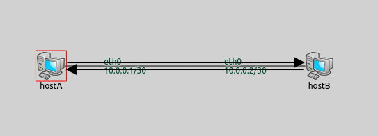
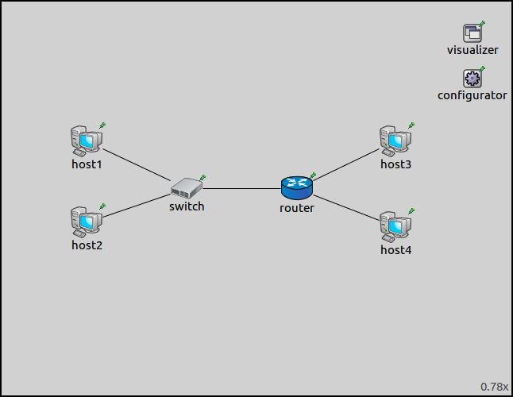
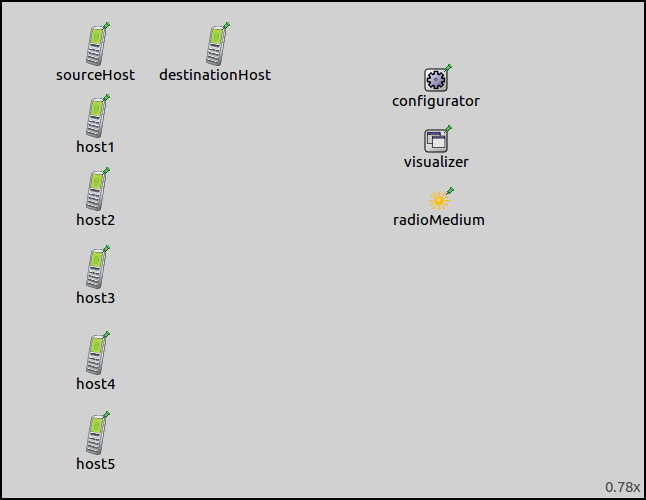
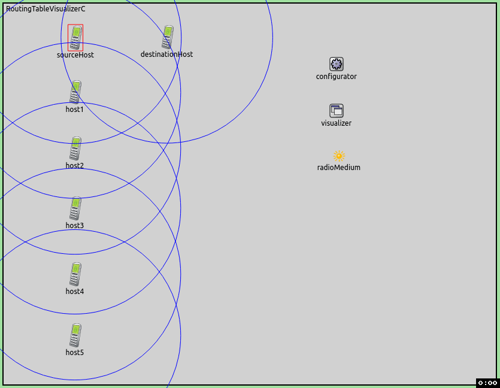

In a complex network topology, it's difficult to see how a packet would be routed because the relevant data is scattered among network nodes and hidden in their routing tables. Graphically visualizing routing tables in a network presents a lot of information about routing at a glance in a concise way. When routing entries are visualized this way, there's no need to examine individual routing tables, and sift through difficult to understand numeric data. This example consists of 3 simulation models of increasing complexity, each demonstrating different features of routing table visualization.
The RoutingTableVisualizer module can visualize routing table entries in the following way. Routing table entries are represented visually by solid arrows.
An arrow going from a source node represents a routing table entry in the source node's routing table. The endpoint node of the arrow is the next hop in
the visualized routing table entry.
Note that in the terminology of this example, the word route means the multihop path that leads from A to B.
The visualizer has a destinationFilter parameter, which specifies the destination nodes of the visualization. The routing entry that best matches a destination in each routing table is visualized by an arrow. By default, the best matching routing entries towards all destinations from all routing tables are visualized. The nodeFilter parameter controls which nodes' routing tables should be visualized.
The visualizer reacts to changes. For example, when a routing protocol changes a routing entry, or an IP address gets assigned to an interface by DHCP. The visualizer automatically updates the visualizations according to the specified filters. Some changes, such as assigning an IP address might change the visualization to a great extent.
This configuration demonstrates how to enable the visualization of routing tables, and how the visualization looks like.
The network for this configuration contains 2 connected StandardHosts, an IPv4Configurator module and a RoutingTableVisualizer module.
The configuration contains one line, which enables the visualization of routing tables with the displayRoutingTables parameter.
All other parameters of the visualizer is left on default.
When the simulation is run, the network looks like this:

In this simple network, there are just two visualized routing entries, in HostA towards HostB, and in HostB towards HostA.
Here are the routing tables of the two hosts, the visualized entries are highlighted:
Node RoutingTableVisualizerA.hostA -- Routing table -- Destination Netmask Gateway Iface Metric 10.0.0.2 255.255.255.255 * eth0 (10.0.0.1) 0 10.0.0.0 255.255.255.252 * eth0 (10.0.0.1) 20 127.0.0.0 255.0.0.0 * lo0 (127.0.0.1) 1 Node RoutingTableVisualizerA.hostB -- Routing table -- Destination Netmask Gateway Iface Metric 10.0.0.1 255.255.255.255 * eth0 (10.0.0.2) 0 10.0.0.0 255.255.255.252 * eth0 (10.0.0.2) 20 127.0.0.0 255.0.0.0 * lo0 (127.0.0.1) 1
TODO: ha netmaskRoutes = "" akkor csak egy bejegyzés van
Note that you can click on an arrow, and the corresponding routing table entry is shown in the inspector window.
The goal of this configuration is to demonstrates the use of the nodeFilter and destinationFilter parameters.
The network for this configuration looks like the following:

It consists of a router connected to a switch. Two StandardHosts are connected to the switch, and two additional StandardHosts are connected to the router. The visualizer module is an IntegratedVisualizer, which contains all available visualizers as submodules.
host2 to host3.
To this end, the destinationFilter parameter is set to host3.
To narrow down the visualized routes to the ones that lead from host2, the nodeFilter parameter
is specified as "not(host1 or host4)". This instructs the visualizer not to visualize the routing tables of host1 and host4.
The routing table of router needs to be visualized, because the route from host2 to host3 leads through it.
This is what the visualized routing entries look like:

The defaults of the nodeFilter and destinationFilter parameters is "*", which means the best matching routing entries towards all destinations from all routing tables are visualized. With the default settings, the network would look like the following:
You might have noticed that the arrows don't go through the switch. This is because L2 devices, like switches and access points, don't have network layers, thus don't have IP addresses or routing tables. They are effectively transparent for the route visualization arrows. The visualizer could, in theory, know that the packets will take a path that goes through the switch. This is true in this situation, but in others there may be multiple interconnected switches, and more paths that the packets can take. However, the pathfinding in that case is not a network layer level problem.
The visualizer automatically reacts to changes in the routing table of hosts selected with the nodeFilter parameter. In this configuration, the routing tables are changed by AODV (Advanced On-Demand Vector Routing Protocol).
Here is the network for this configuration:

The network contains a series of AODVRouters. These are mobile hosts that have AODV and
IP forwarding enabled. Six of the hosts are laid out in a chain, and are stationary.
Their communication ranges are specified so that each host can only reach the adjacent hosts.
The destinationHost moves up and down along the chain, and is only in the communication range
of 1 or 2 nearby hosts.
We want the AODV protocol to configure the routing tables, so the network configurator is instructed not to add static routes.
The sourceHost is configured to ping destinationHost. Since each host is capable of reaching the adjacent hosts only, the ping
packets are relayed to destinationHost through the chain. As the network topology changes because of node mobility, the AODV protocol dynamically configures the routing tables.
The following animation depicts what happens when the simulation is run.
When destinationHost starts to move downwards, packets get routed along the chain to the host that is currently adjacent to destinationHost. Finally, this host relays the packets to destinationHost. When destinationHost reaches the bottom of the playground
and turns back, the routing entries in the lower hosts don't change. This is because AODV is an on-demand protocol, thus routing tables are only changed when it is required. On the way back, the lower hosts are not taking part of the packet relay, and the unused entries remain in their routing tables. When destinationHost gets to the top of the
playground, the process starts over again. Routing tables are dynamically reconfigured by AODV to relay the packets along the chain to destinationHost. The visualizer automatically reacts to changes in the routing tables, and updates the visualization accordingly.
This example only demonstrated the key features of routing table visualization. For more information, refer to the
RoutingTableVisualizer NED documentation.